Kompletny przewodnik dotyczący używania JW Time
Dodano nowe języki i ulepszono zarządzanie programami ręcznymi oraz automatycznym pobieraniem oficjalnych multimediów.
Przy pierwszym uruchomieniu JW Time wyświetla się kreator, który zbiera niezbędne ustawienia przed otwarciem aplikacji. Jest to zalecana ścieżka dla nowej instalacji, ponieważ pozwala uniknąć konieczności natychmiastowego wyszukiwania każdej opcji w panelach ustawień.
Na końcu kreatora możesz otworzyć JW Time i wykonać tylko bardziej zaawansowane opcje, takie jak Media, Server Web, Nagrania i Kopia zapasowa.
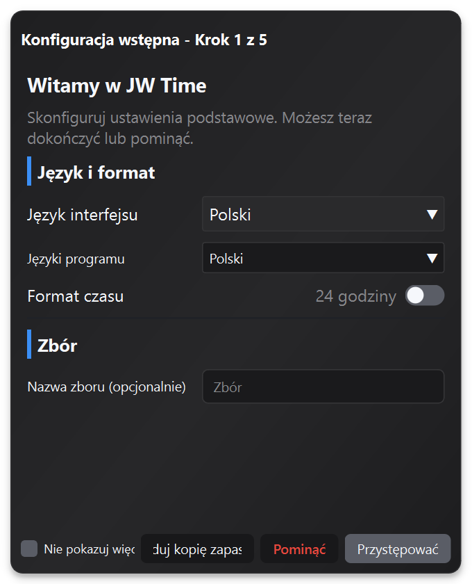
Jeśli zamkniesz lub pominiesz kreatora, możesz ręcznie skonfigurować podstawowe elementy w Ustawieniach i oknie głównym. Ta lista kontrolna służy również jako szybka kontrola przed spotkaniem.
Idź do rozdział 9 · Ogólne według języka i formatu czasu, a następnie w formacie rozdział 10 · Zbory, jeśli chcesz utworzyć lub wybrać profil. Sprawdź, czy załadowany harmonogram odpowiada wybranemu tygodniowi i językowi.
W sekcji 12 · Ekran wybierz odpowiednie monitory i aktywuj okna, których będziesz używać. Aby zmienić wygląd Ekranu odmierzania czasu, zobacz sekcja 5.3 · Dostosowywanie Ekranu odmierzania czasu.
Otwórz sekcja 4 · Okno Media aby sprawdzić utwory, filmy i zdjęcia tygodnia. Opcje pamięci podręcznej, jakości i tła znajdują się w pliku sekcja 13 · Media.
Użyj głównego okna, aby uruchomić timery, wysłać wiadomości do Contatempo i otworzyć panel REC. Jeśli nagrywasz spotkania, sprawdź opcje w pierwszej kolejności rozdział 16 · Nagrania.
Jeśli korzystasz ze zdalnego sterowania, QR lub konsultacji w przeglądarce, skonfiguruj sekcja 15 · Połączenie i serwer. Aby pracować bez konfiguracji sieci lub przesyłania, zaznacz opcję sekcja 17 · Pakiety i kopie zapasowe offline.
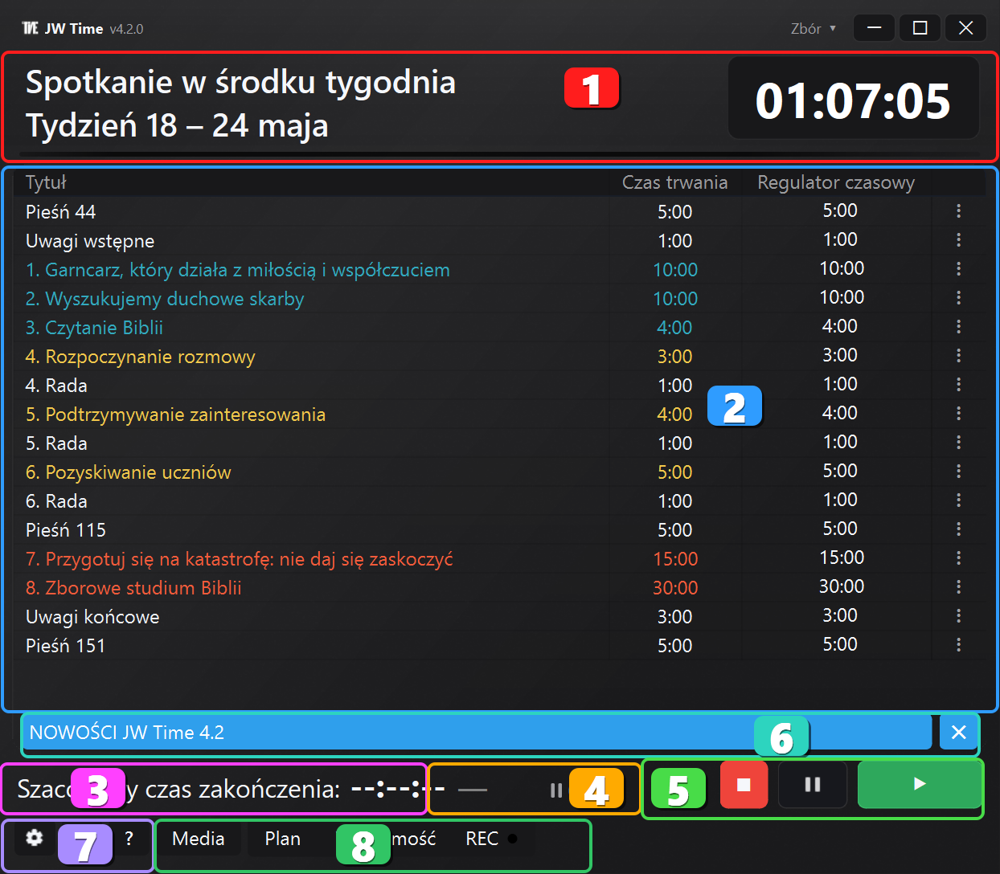
Główny ekran jest sercem aplikacji. Stąd możesz uruchamiać, zarządzać i monitorować wszystkie timery spotkań, przeglądać najważniejsze informacje, takie jak tytuł bieżącej części, zegar i pozostały czas, a także sprawdzać ważne wiadomości i powiadomienia.
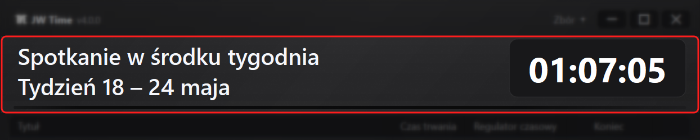
W górnym wierszu wyświetlany jest tytuł aktualnej części, natomiast pod zegarem z aktualnym czasem lub, po uruchomieniu timera, wyświetla się odliczanie pozostałego czasu. W formacie 12-godzinnym przyrostek AM/PM jest również wyświetlany w mniejszym rozmiarze, aby poprawić czytelność.
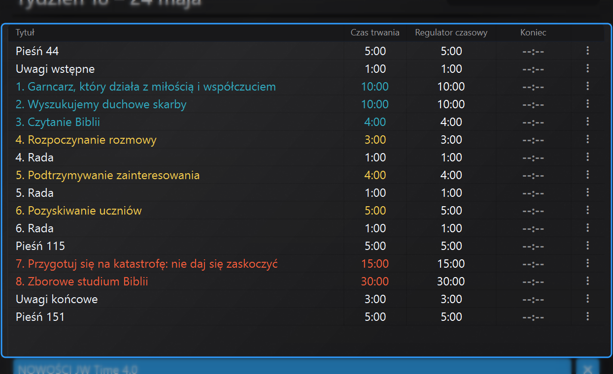
Wyświetla program spotkania (tytuł, czas trwania, status). Treść ładuje się automatycznie w oparciu o wybrany dzień: aplikacja rozpoznaje, czy jest to środek tygodnia, czy weekend i proponuje odpowiedni harmonogram. Aby zapoznać się ze szczegółowymi przyciskami i akcjami, zobacz sekcja 3 · Manipulowanie timerami.
Jeśli jest aktywny Pokaż kolumnę Zakończ w ustawieniach ogólnych tabela pokazuje także o której godzinie zakończy się bieżąca i kolejne części. Nie jest to ustalony czas harmonogramu: jest to projekcja aktualizowana w czasie rzeczywistym na podstawie aktualnego czasu, pozostałych timerów i wszelkich skumulowanych odchyleń.
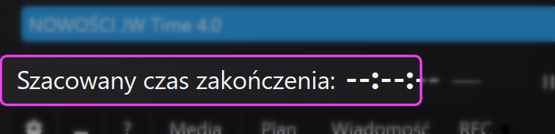
Pokazuje oczekiwany czas zamknięcia na podstawie harmonogramu. Pojawia się obok odchylenie:
+m:ss (żółty w odległości 1', czerwony poza) = opóźnienie
−m:ss (zielony) = postęp
Aktualizacja czasu i wskaźników w czasie rzeczywistym. Jeśli aktywne są adaptacyjne programy Studium Biblii/Strażnicy, czas trwania jest przeliczany tak, aby mieścił się w godzinach zamknięcia.
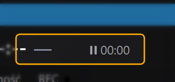
Licznik skumulowany gg:mm:ss przerw technicznych/zmiany mówcy: sumuje czas, w którym stoper został wstrzymany. Podczas przerwy licznik częściowy pozostaje zatrzymany, podczas gdy licznik rośnie. Kliknięcie wskaźnika resetuje sumę.

Elementy sterujące uruchamianiem, zatrzymywaniem i zarządzaniem timerami: Stop (czerwony), Pauza i Start/Dalej (zielony). Przycisk Pauza wstrzymuje licznik czasu częściowego (odliczanie pozostaje zatrzymane), podczas gdy czas pauzy/zmiany głośnika nadal rośnie. Aby wyjść z pauzy należy ponownie nacisnąć Pauza lub przejść do kolejnej części przyciskiem Start/Dalej: skumulowany czas rejestrowany jest w liczniku, o którym mowa w pkt. 1.4.
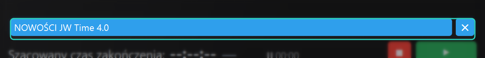
Gdy pojawią się oficjalne komunikaty dotyczące aplikacji, na ekranie głównym pojawi się okno/ostrzeżenie „Wiadomości”. Kliknięcie go powoduje otwarcie panelu z podsumowaniem aktualizacji.
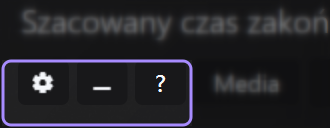
Szybkie przyciski otwierania ustawień, minimalizowania lub przywracania okna oraz uzyskiwania dostępu do pomocy. Są one oddzielone od trybów pracy, aby dolny rząd był wyraźniejszy.
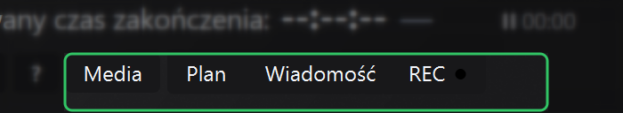
Stąd możesz przejść do okna Media, Zarządzania programami, Wiadomości i panelu REC. Czarna kropka obok REC wskazuje status rejestracji.
W tej sekcji opisano podstawowe operacje zarządzania timerem — takie jak dodawanie, edytowanie lub usuwanie wpisów — oraz korzystanie z poleceń startu, skoku i resetowania.
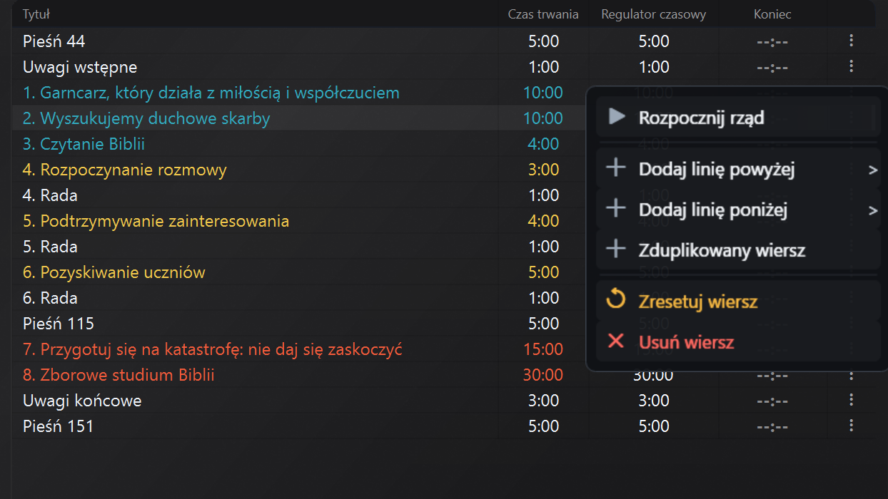
Timer jest stale aktualizowany: główne odliczanie u góry pokazuje pozostały czas aktywnej części, podczas gdy odpowiedni wiersz pozostaje podświetlony w tabeli. Kolor górnego paska odzwierciedla kolor bieżącej części.
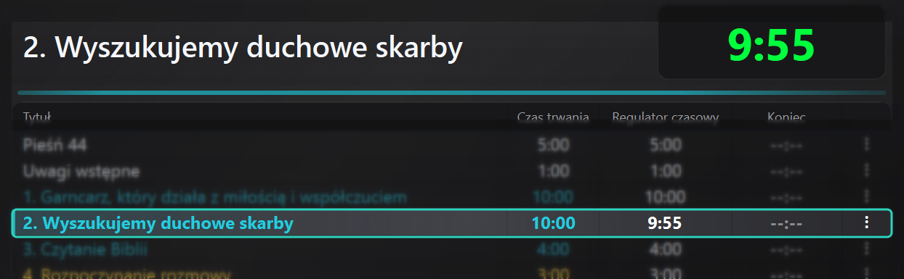
Jeśli zmienisz czas trwania lub przejdziesz do następnej części, szacowany czas zakończenia zostanie natychmiast przeliczony. Pozwala to kontrolować deltę wyprzedzenia/opóźnienia oraz skumulowany czas pauz lub zmian głośników bez otwierania innych paneli.
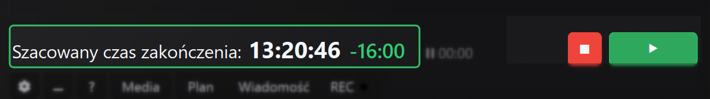
Jeśli w Ustawieniach włączono Adaptacyjne studium Biblii i/lub Adaptacyjne studium Strażnicy, aplikacja dynamicznie dostosowuje czas trwania wybranej części, aby zachować godzinę zamknięcia spotkania. Regulacja dotyczy tylko części z aktywną opcją i może automatycznie zwiększać lub zmniejszać minuty w oparciu o skumulowane wyprzedzenie/opóźnienie. Na obrazie linia, której dotyczy problem, jest izolowana, a dostosowana wartość jest podświetlona na pomarańczowo, dzięki czemu od razu wiadomo, który timer został poprawiony. Zawsze możesz interweniować ręcznie: adaptacja przelicza, zaczynając od nowej sytuacji.
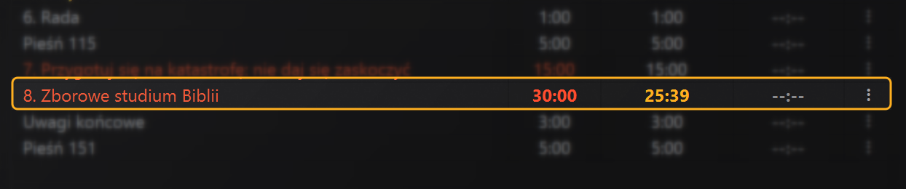
Okno Media gromadzi zawartość powiązaną z tygodniem: pieśni, filmy, obrazy i przydatne odniesienia do danej części. Może pomóc operatorowi przygotować spotkanie, sprawdzić dostępne treści i rozpocząć je w razie potrzeby.
Uwaga dotycząca użytkowania: okno Media oferuje operatorowi narzędzie wspomagające przygotowanie, kontrolę i zarządzanie już dostępnymi treściami multimedialnymi. Jego praktyczne zastosowanie zależy od lokalnych potrzeb i zawsze musi odbywać się w zgodzie ze wskazaniami zboru i przepisami. W razie potrzeby technicznej można go również wykorzystać jako rozwiązanie do tworzenia kopii zapasowych lub kopii zapasowych.
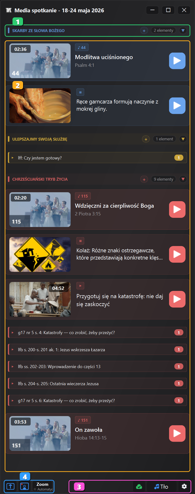
Obszar 1 wskazuje, kiedy oficjalne media tygodnia nie są jeszcze dostępne offline. Możesz je pobrać teraz lub przełożyć. To samo zachowanie można zautomatyzować w ustawieniach sekcja 13 · Media, aktywując automatyczne pobieranie oficjalnych mediów. Poniżej powiadomienia znajdziesz sekcje playlisty z kolorowym tytułem, licznikiem pozycji i szybkimi poleceniami.
Uwaga: pobieranie oficjalnych multimediów wymaga, aby sieć umożliwiała JW Time dostęp do jw.org i zasobów używanych w mediach. Alternatywne pobieranie wprowadzone dla programów nie jest dostępne dla multimediów. Jeśli routery, zapory ogniowe, DNS lub filtry treści blokują witryny religijne lub dostęp do JW Time, oficjalne media mogą nie zostać pobrane; w takim przypadku możesz użyć multimediów znajdujących się już w trybie offline lub ręcznie dodać pliki lokalne.
Obszar 2 zawiera zakładki z podglądem, tytułem, odnośnikiem i przyciskiem uruchamiania. Kolory odpowiadają obszarom harmonogramu, dzięki czemu można szybko zlokalizować pieśni, obrazy, filmy i odniesienia do danej części.
Z menu kontekstowego możesz ręcznie oznaczyć przedmiot jako używany lub nieużywany. Jeśli opcja Tłumi już używane media jest aktywny, już używana zawartość pozostaje rozpoznawalna w bardziej dyskretnym stylu. Okna wyboru oficjalnego wideo, audio i obrazów zawierają również tryb Globalny, przydatne, gdy trzeba wyszukiwać poza bieżącą kategorią.
Obszar 3 zbiera szybkie polecenia okna Media: pobraną zawartość, podgląd, synchronizację, tło i dedykowane ustawienia. Pozostaje na dole, aby być osiągalnym nawet wtedy, gdy lista jest długa.
Obszar 4 gromadzi polecenia Zoom okna Media. Przeznaczone są dla osób, które pokazują multimedia także w formie wideokonferencji i pracują z Ekranem Publicznym na monitorze pokojowym.
Przed użyciem tych klawiszy skonfiguruj globalny skrót udostępniania ekranu w Zoom i wprowadź tę samą kombinację w polu sekcja 14 · Zoom. Jeśli oba skróty nie są zgodne, JW Time wysyła polecenie, ale Zoom nie reaguje zgodnie z oczekiwaniami.
Panel Tło zarządza muzyką przed spotkaniem, a jeśli jest skonfigurowana, także po spotkaniu, bez mieszania jej z mediami w lineupie. Podczas odtwarzania pokazuje bieżący utwór, następny utwór, postęp i czas trwania.
Możesz rozpocząć, wstrzymać, przejść do poprzedniego lub następnego utworu, włączyć odtwarzanie losowe i otworzyć listę odtwarzania. Ustawienia muzyki, w tym automatyczne zachowanie i zanikanie, konfiguruje się z poziomu panelu sekcja 13 · Media.
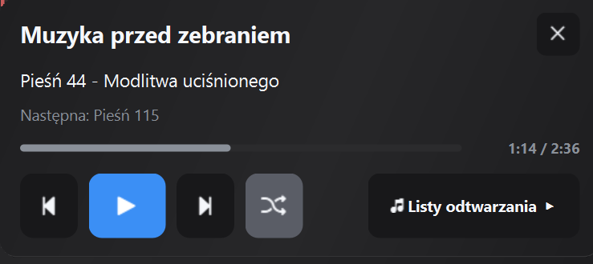
JW Time 4.0 oddziela widoki: Ekran publiczny służy do treści widocznych dla obecnych w sali, a Ekran odmierzania czasu pozostaje przeznaczony dla osób prowadzących zebranie.
Na ekranie publicznym w oddzielnym oknie wyświetlane jest odliczanie, wiadomość powitalna, zapis roku, logo i zawartość wizualna.
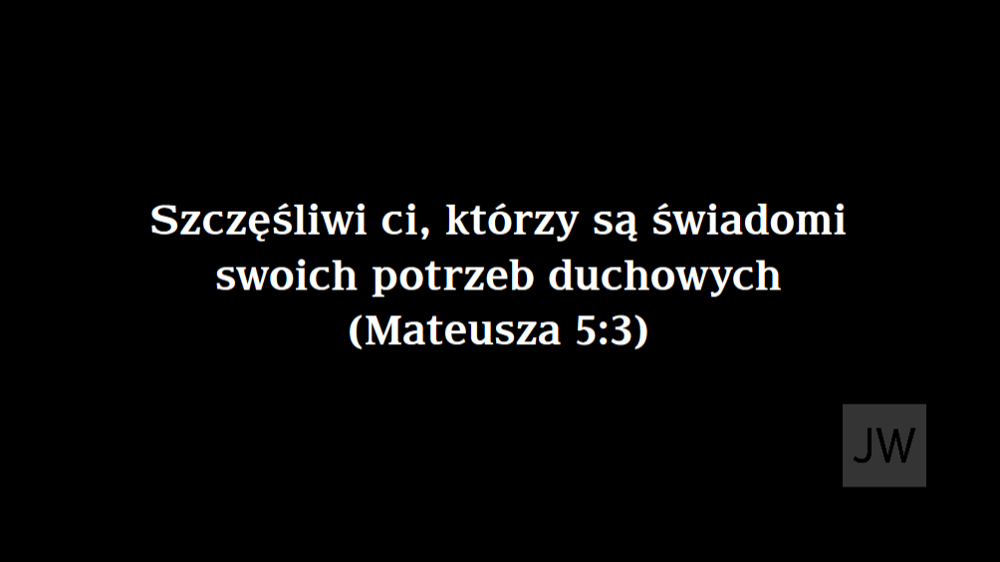
Ekran Contatempo pokazuje zegar, odliczanie trwającej części, komunikaty dla prelegenta oraz stany związane z zarządzaniem czasem. Jest to widok najbardziej odpowiedni dla podium, prezydenta lub pracowników czasu.
Dostosowywanie układu zostało omówione osobno w sekcja 5.3 · Dostosowywanie Ekranu odmierzania czasu, więc codzienne korzystanie z ekranu pozostaje oddzielone od ustawień graficznych.

Ekran Contatempo można dostosować za pomocą przycisku Dostosuj w rozdział 9 · Ogólne.
Możesz zacząć od już dostępnego presetu lub zmodyfikować układ zgodnie ze swoimi potrzebami. Ekran publiczny ma swoje własne ustawienia w pliku sekcja 12 · Ekran; tutaj skupiamy się na pracy nad układem Contatempo.
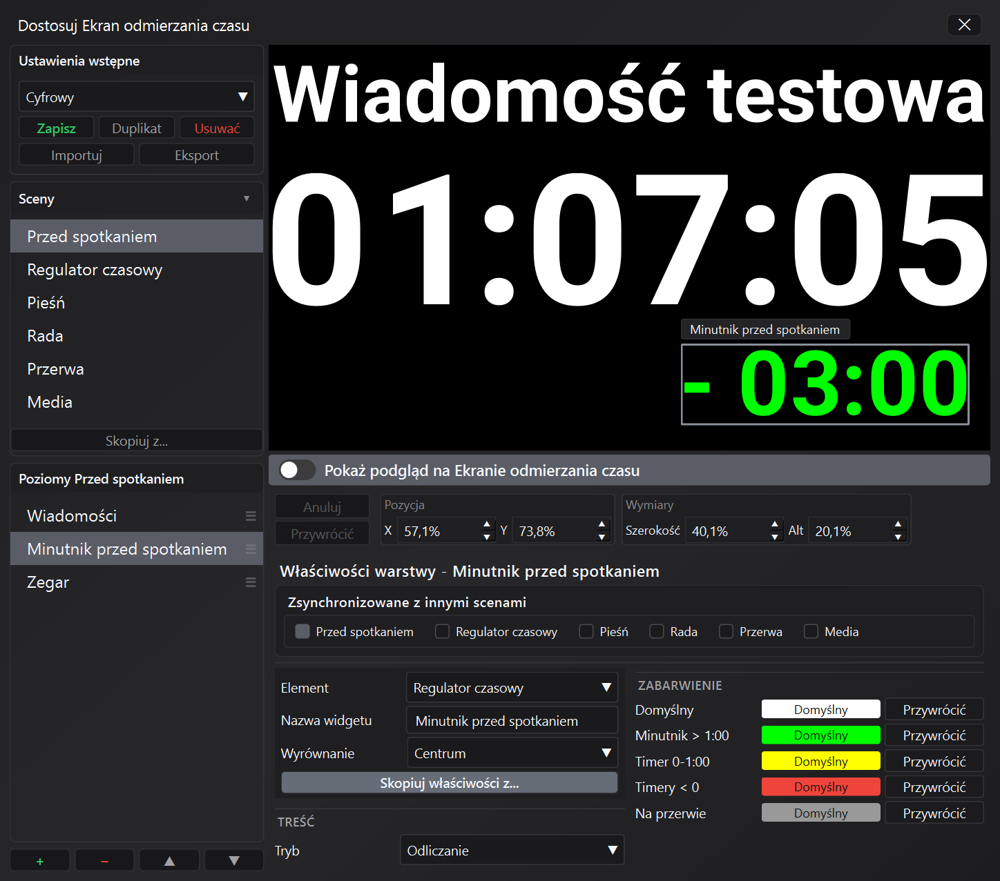
Ustawienie wstępne to układ początkowy.
Możesz wybrać ustawienie wstępne w rozdział 9 · Ogólne i używaj go w niezmienionej postaci lub otwórz edytor dostosowywania, aby go zmodyfikować.
Układ jest podzielony na sceny.
Każda scena odpowiada innej sytuacji na ekranie Contatempo. Umożliwia to pokazanie innego układu w zależności od czasu lub rodzaju oglądanej części.
Przed dokonaniem zmian zawsze sprawdź, która scena jest wybrana.
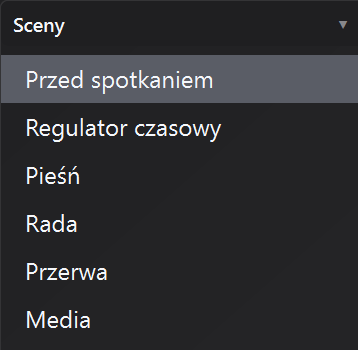
Kiedy naciśniesz + w panelu Warstwy JW Time pokazuje typy elementów, które możesz dodać do sceny. Niektóre poziomy odczytują rzeczywiste dane dotyczące spotkań i zmieniają się automatycznie; inne służą do budowy układu graficznego.
Pokazywanie w instrukcji wszystkich właściwości każdego poziomu nie jest wygodne, ponieważ panel właściwości zmienia się w zależności od wybranego typu. Tutaj dowiesz się, co robi każdy poziom i kiedy z niego korzystać.
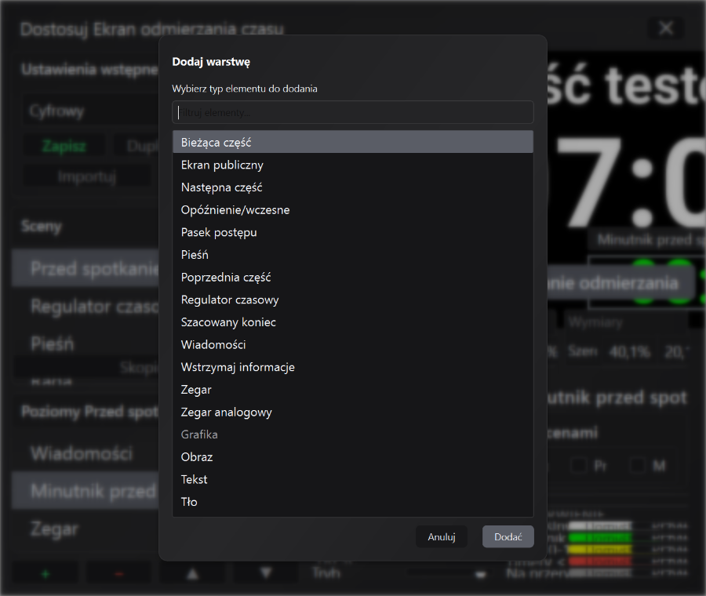
Poziomy Tło, Tekst tj Obraz można je dodawać wielokrotnie. Na pozostałych poziomach, jeśli element tego samego typu już istnieje, edytor oferuje możliwość połączenia go z inną sceną lub w razie potrzeby stworzenia niezależnej.
W edytorze możesz modyfikować warstwy obecne w wybranej scenie.
Dla każdego poziomu możesz zmienić położenie i rozmiar na trzy sposoby:
Wartości X i Y kontrolują położenie warstwy.
Wartości Szerokość i Alt kontrolują rozmiar warstwy.
Wszystkie te wartości wyrażone są w procentach.
W panelu warstw możesz także zarządzaćporządek superpozycji: Każda warstwa może znajdować się nad lub pod innymi, co pozwala określić, która z nich pojawi się na pierwszym planie w przypadku nakładania się. Kolejność można zmienić przeciągając warstwy na liście lub korzystając z przycisków ▲ tj ▼ pod nim.
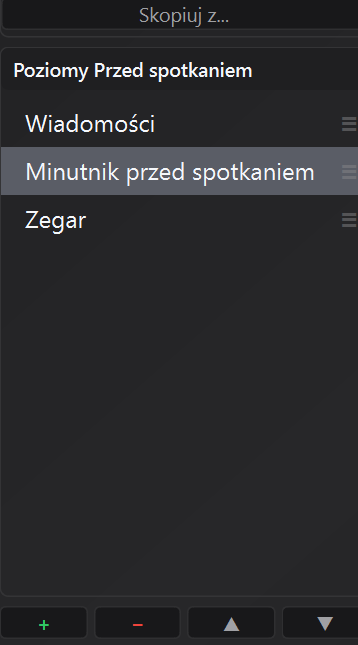
Po wybraniu poziomu możesz:
Poniżej podglądu znajdziesz elementy sterujące numeryczne X, Y, Szerokość tj Alt aby precyzyjnie dopasować położenie i rozmiar.
Po zmianach zapisz układ i zastosuj go. W dowolnym momencie możesz ponownie otworzyć edytor, aby go zaktualizować.
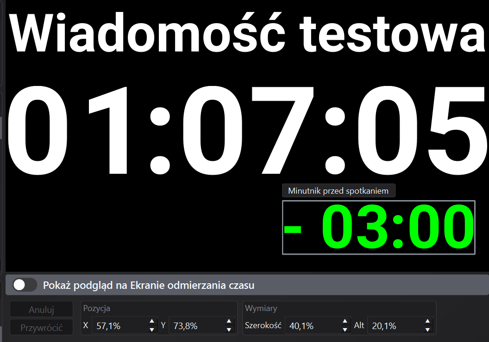
Funkcja Wiadomości pozwala na dyskretną i wyraźną komunikację z prelegentem podczas spotkania, pozwalając mu go ostrzec lub wydać polecenia, nie przerywając ani nie zakłócając przebiegu części. Wiadomości pojawiają się na ekranie Contatempo, więc osoba mówiąca widzi je w czasie rzeczywistym, bez zakłóceń.
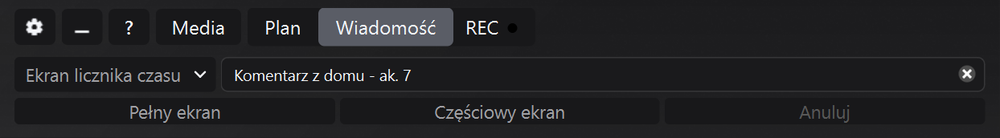
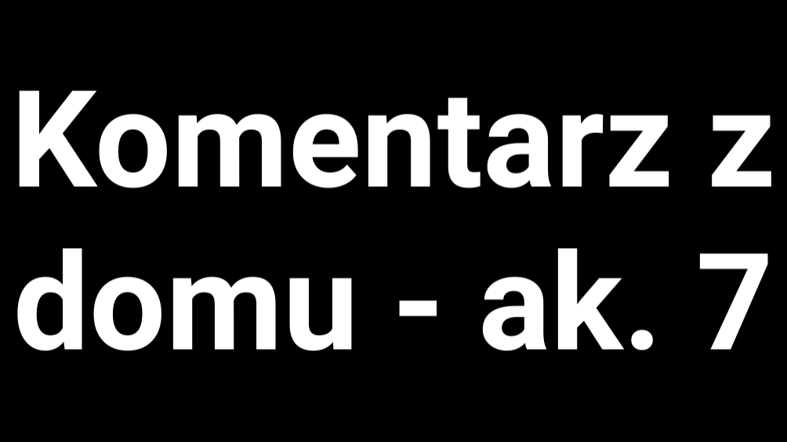
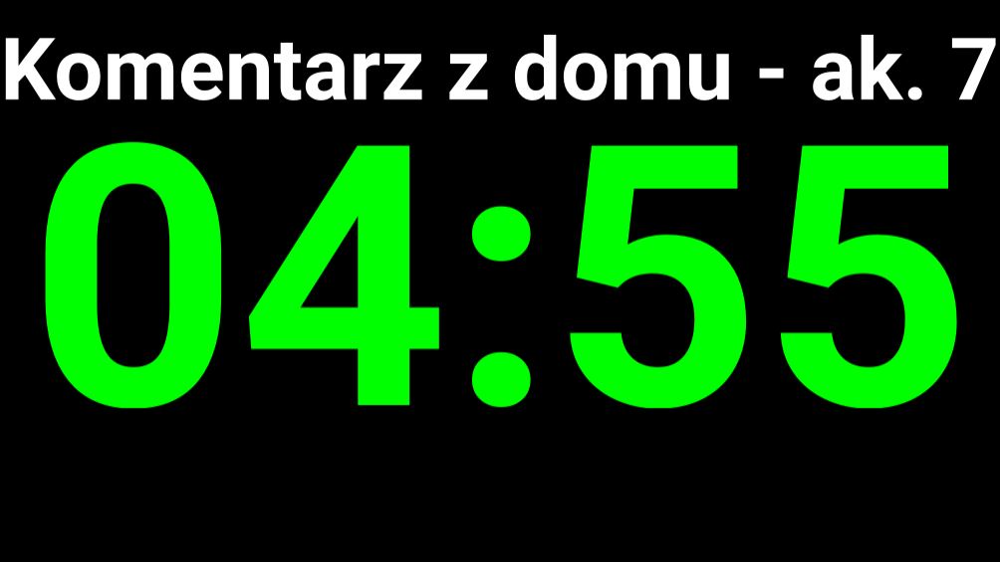
Kiedy wysyłasz wiadomość, automatycznie pojawia się okno podglądu, którego rozmiar można przesuwać i które można przesuwać, pokazujące dokładnie to, co osoba mówiąca widzi na monitorze Contatempo. Dzięki temu możesz sprawdzić komunikat i wyświetlacz timera w czasie rzeczywistym.
Przycisk REC Znajduje się na dolnym pasku obok Harmonogramu i Wiadomości. Kropka obok tekstu pokazuje stan nagrywania (oczekiwanie, aktywne, wstrzymane lub konwersja MP3), natomiast panel REC zapewnia szybkie sterowanie otwieraniem folderu JWTimeREC, zarządzaniem nagraniami ręcznymi oraz monitorowaniem poziomu dźwięku komputera i mikrofonu.
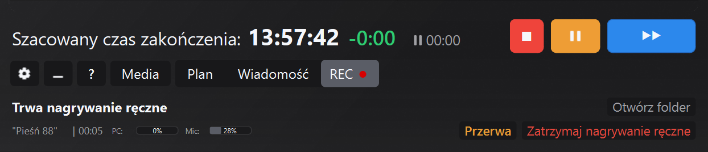
Panel REC gromadzi kontrolki, z których można korzystać bez wchodzenia w ustawienia:
Po otwarciu REC na dolnym pasku pojawia się zawsze widoczny panel ze stanem nagrywania i miernikiem dźwięku. Tutaj możesz rozpocząć/zatrzymać nagrywanie ręczne, monitorować poziom dźwięku komputera/mikrofonu i jednym kliknięciem otworzyć folder JWTimeREC.
Gdy Server Web jest aktywny, możesz go otworzyć z innego urządzenia w tej samej sieci lokalnej za pomocą przeglądarki. Umożliwia to wyświetlanie Contatempo na zewnętrznych projektorach, tabletach lub komputerach i jest przydatne dla prezydenta, który śledzi liczniki czasu w różnych częściach.
Pełną konfigurację Server Web, pilota zdalnego sterowania, łącza zdalnego i kodu QR można znaleźć w sekcja 15 · Połączenie i serwer.
Z poziomu przeglądarki możesz:
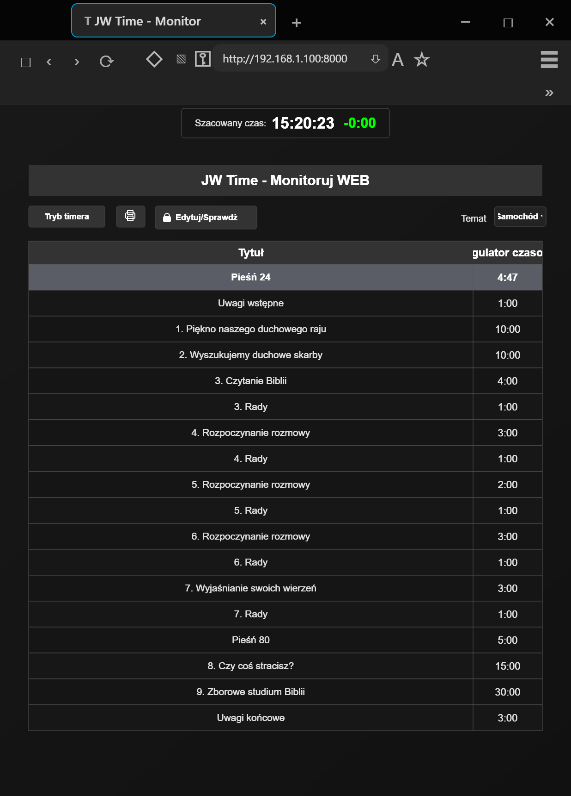
Jeśli włączone jest zdalne sterowanie, możesz obsługiwać timer i program z poziomu przeglądarki, nie będąc przed głównym komputerem.
Dostępne operacje zależą od skonfigurowanych uprawnień i mogą obejmować:
Możesz otworzyć Server Web, wpisując adres pokazany w aplikacji lub używając kodu QR, jeśli jest dostępny.
W zależności od konfiguracji można zapewnić różne poziomy dostępu, na przykład tylko do przeglądania lub do kontroli i modyfikacji. Jeśli jest skonfigurowany, dostęp może wymagać PIN.
Aby zobaczyć pełną konfigurację, zobacz sekcja 15 · Połączenie i serwer.
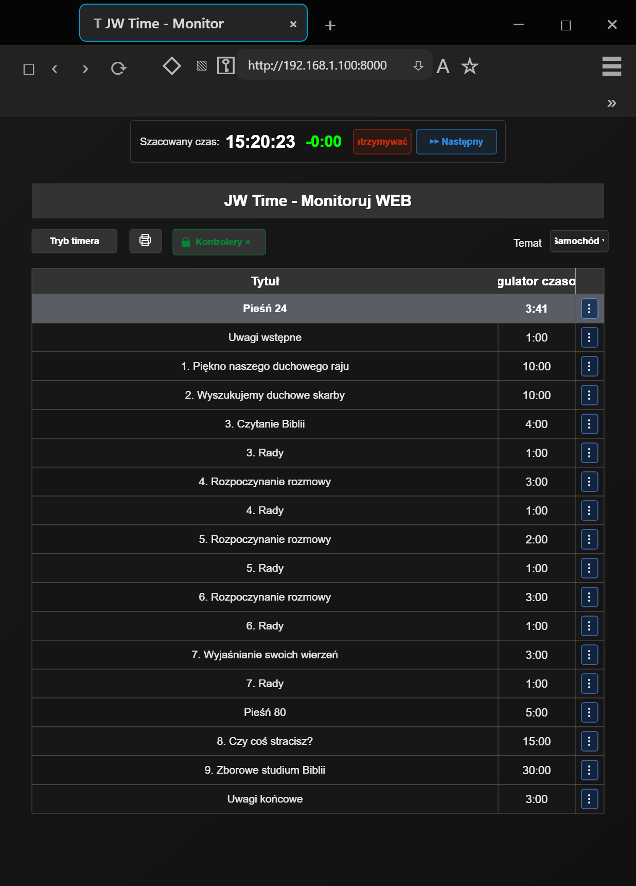
Jeśli osoba, która ma śledzić lub monitorować JW Time, nie znajduje się w tej samej sieci lokalnej, możesz wygenerować tymczasowe łącze zdalne. Ten scenariusz jest przydatny w przypadku spotkań wideokonferencyjnych, pomocy zdalnej lub zarządzania z urządzenia podłączonego do innej sieci.
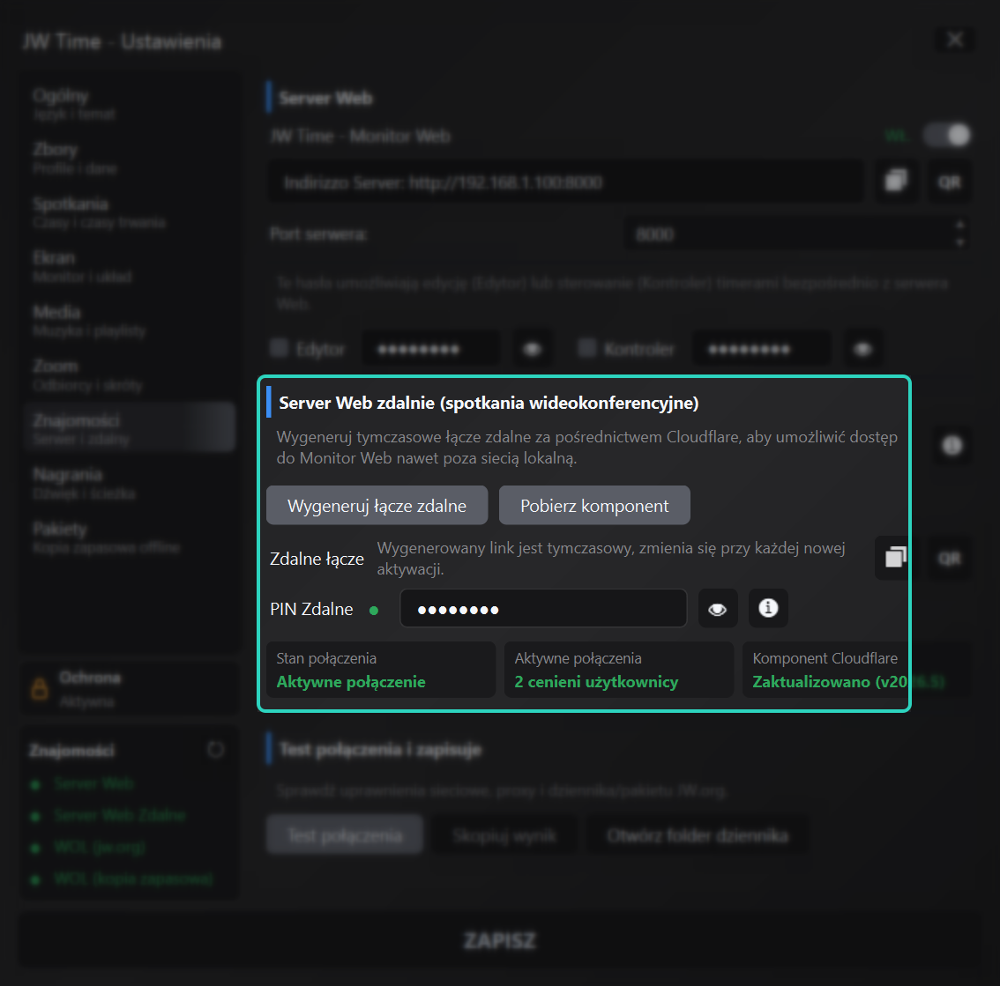
Część operacyjna jest skonfigurowana w punkt 15.2 · Server Web zdalnie. Ustawienia Zoom pozostają oddzielne: Zoom obsługuje udostępnianie i skróty, natomiast łącze zdalne dotyczy Monitor Web.
W tej części możesz skonfigurować zachowanie aplikacji: ustawienia ogólne, profile zborów, spotkania, Ekran odmierzania czasu, Media, Zoom, Monitor Web i serwer, nagrania oraz kopie zapasowe i przywracanie.
Przycisk Zapisz powoduje zastosowanie wszystkich zmian.
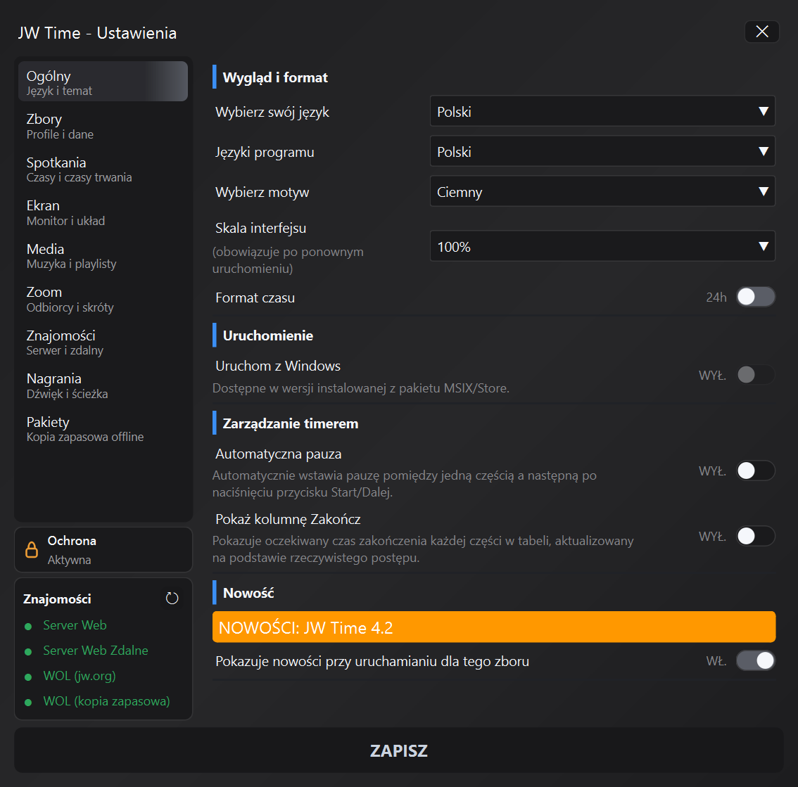
Panel ten umożliwia zarządzanie profilami zborów. Każdy profil może utrzymywać dedykowane konfiguracje, więc JW Time może dostosować się do różnych kontekstów bez konieczności każdorazowej ponownej konfiguracji okien, multimediów i układu.
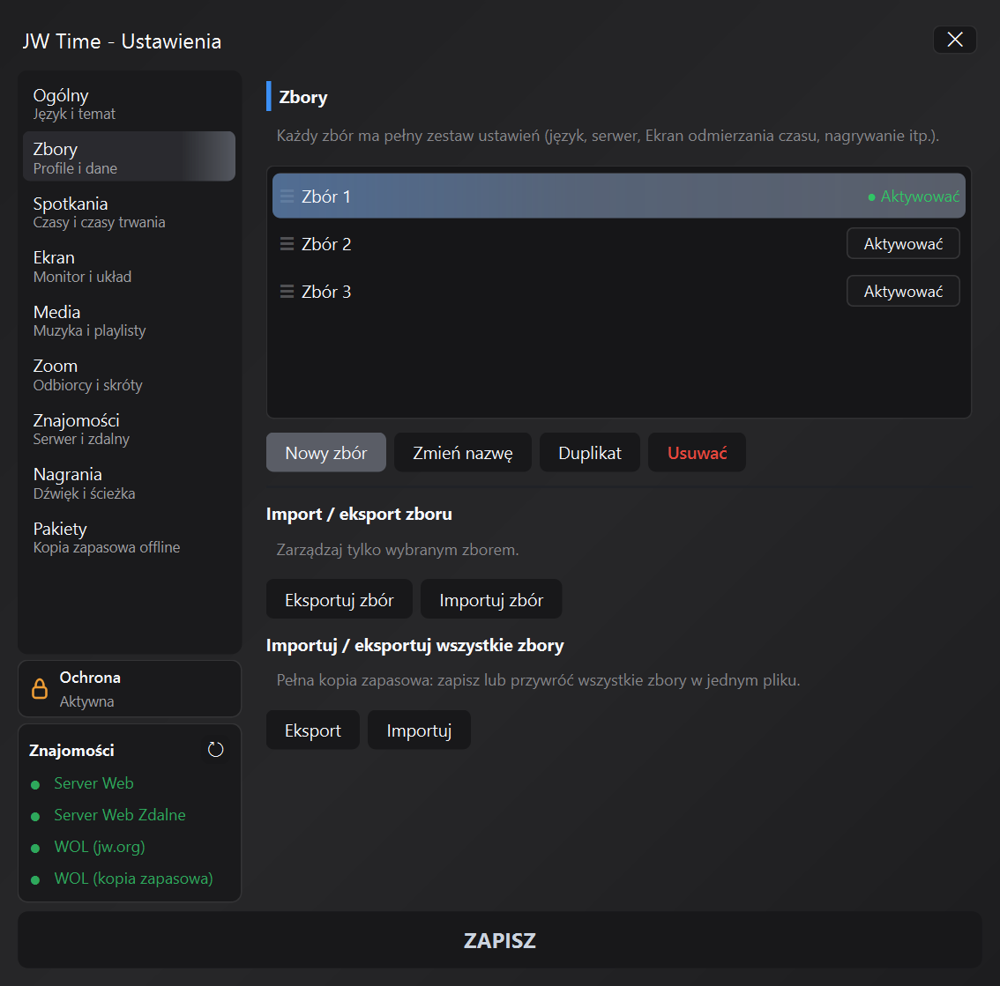
Panel ten służy do programowania odliczania do rozpoczęcia spotkania na Ekranie Publicznym. Ustaw dzień, godzinę i wyprzedzenie (w minutach), od którego chcesz rozpocząć odliczanie.
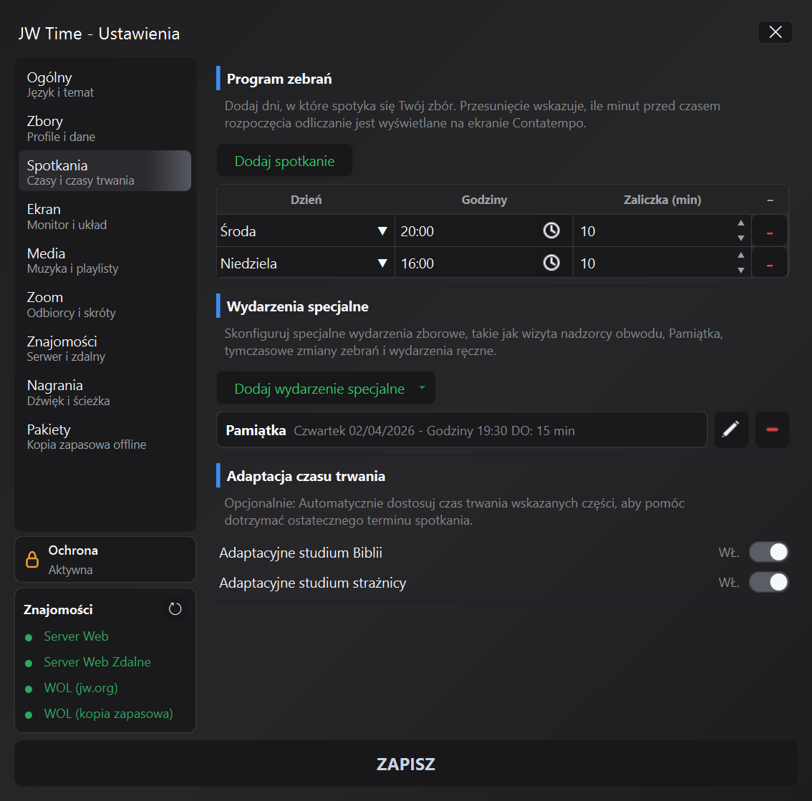
Uwaga: czasy rozpoczęcia służą do publicznego odliczania; Zamiast tego szacowany czas zakończenia zależy od harmonogramu i ewentualnych korekt czasu trwania.
Panel ten gromadzi ustawienia dedykowane dla ekranu Contatempo i ekranu publicznego. Stąd możesz wybrać, gdzie pokazać informacje, jak je zaprezentować i jakie elementy mają być widoczne podczas spotkania.
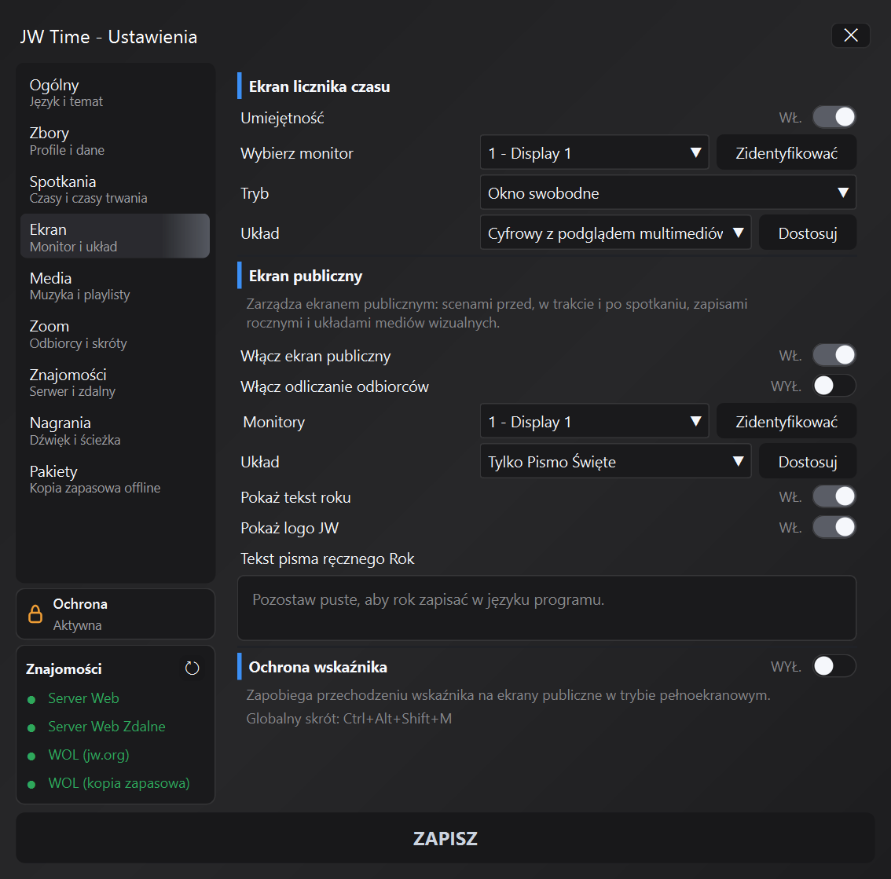
Panel ten zarządza zachowaniem okna Media, lokalną pamięcią podręczną oraz opcjami związanymi z treściami używanymi w trakcie lub po spotkaniu.
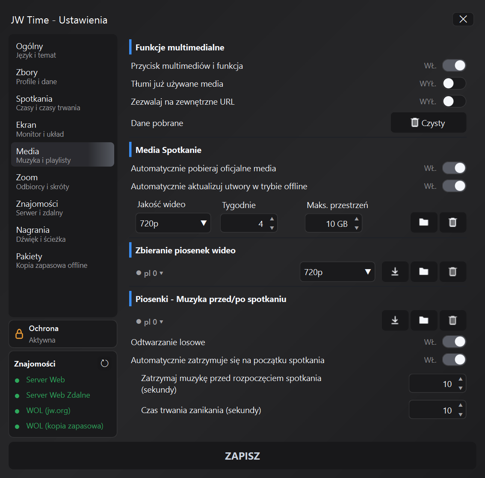
Ten panel zawiera ustawienia przydatne, gdy JW Time jest używany w połączeniu z Zoom lub innymi konfiguracjami pomieszczeń, które wymagają dedykowanego sterowania audio/wideo. Poniższe opcje obsługują klawisze Zoom pliku sekcja 4 · Okno Media.
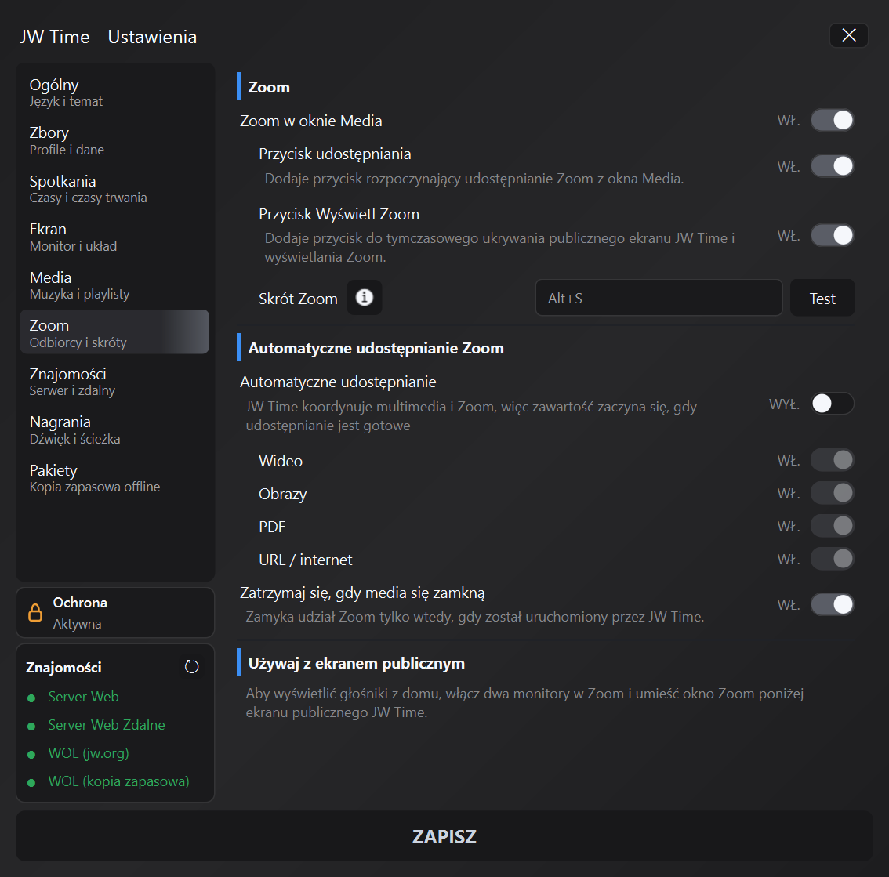
JW Time nie wybiera za Ciebie okna ani ekranu do udostępnienia w Zoom: wysyła kombinację klawiszy wskazaną w tym panelu. Z tego powodu ten sam skrót musi być aktywny także w ustawieniach Zoom, najlepiej jako skrót globalny. Jeśli użyjesz innej kombinacji w Zoom, klucz Udostępnianie i tryb Zoom Samochód nie mogą pracować niezawodnie.
Przed spotkaniem sprawdź cały przebieg: przygotuj Zoom na monitorze publicznym, umieść okno prelegentów lub zduplikowany ekran Zoom pod ekranem publicznym, wypróbuj skrót za pomocą Testy a następnie użyj elementów sterujących z okna Media.
Jeśli ktoś musi skonsultować się z JW Time lub kontrolować go w trybie offline podczas spotkania wideokonferencyjnego, nie jest to konfigurowane z poziomu Zoom: sekcja 8.3 · Zdalny dostęp do spotkań wideokonferencyjnych. W tym panelu pozostają jedynie skróty, udostępnianie i zarządzanie oknem Zoom.
Ten panel zarządza łącznością aplikacji: Monitor Web i Server Web do przeglądania i sterowania w przeglądarce, QR do szybkiego dostępu, zdalnego sterowania, zaawansowanych testów połączeń i zarządzania logami.
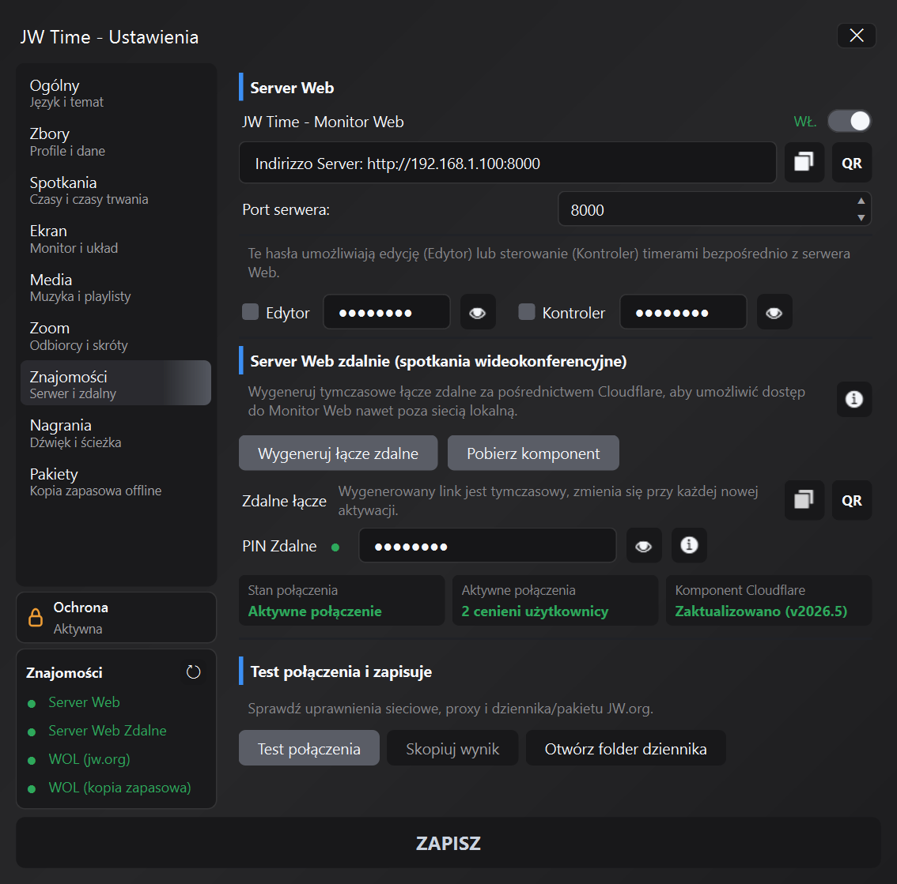
http://192.168.1.100:8000.Gdy Server Web jest aktywny, JW Time można otworzyć z innego urządzenia w tej samej sieci lokalnej za pośrednictwem przeglądarki, aby korzystać z Monitor Web z telefonu, tabletu lub innego komputera.
Ta sekcja służy do zapewnienia dostępności Monitor Web nawet poza siecią lokalną, na przykład podczas spotkań wideokonferencyjnych. Aby zapoznać się z kontekstem użycia, zobacz sekcja 8.3 · Zdalny dostęp do spotkań wideokonferencyjnych; tutaj znajdziesz praktyczne elementy sterujące.
Jeśli ta funkcja jest włączona, Server Web może być używany nie tylko do przeglądania, ale także do zdalnego wykonywania operacji na timerze i programie. Gdy włączona jest rola Kontroler, na ekranie internetowym wyświetlane są także elementy sterujące służące do dostosowywania dostępnych wartości, takich jak czas trwania części.
Wśród nich mogą być dostępne:
W zależności od konfiguracji dostępne mogą być różne poziomy dostępu, w celu odróżnienia prostych konsultacji od funkcji kontrolnych lub modyfikacyjnych.
Funkcja nagrywania dźwięku spotkań dostępna z zakładki „Nagrania” w ustawieniach oraz z przycisku REC w oknie głównym.
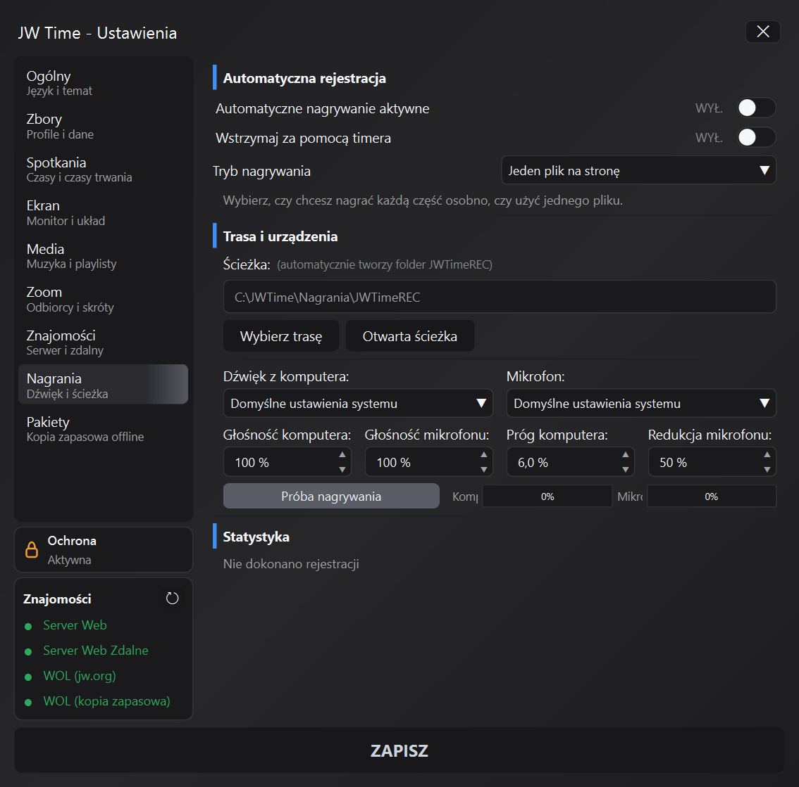
Panel ten przygotowuje programy tygodniowe do użytku w trybie offline oraz umożliwia eksport lub import zapisanych pakietów.
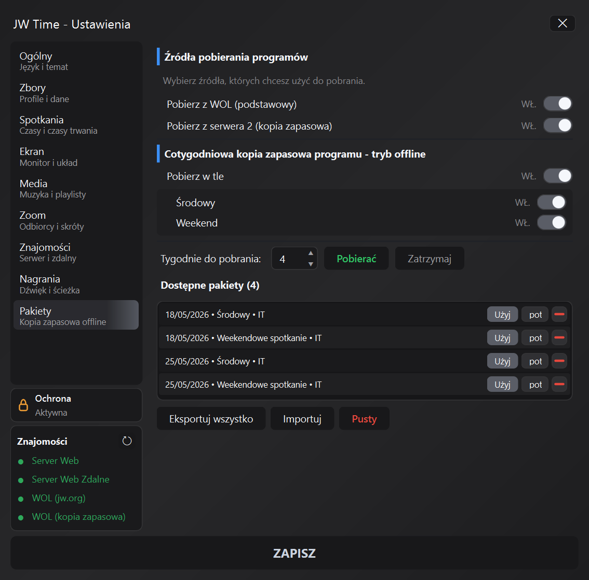